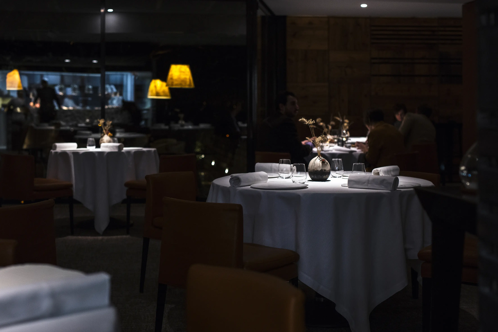
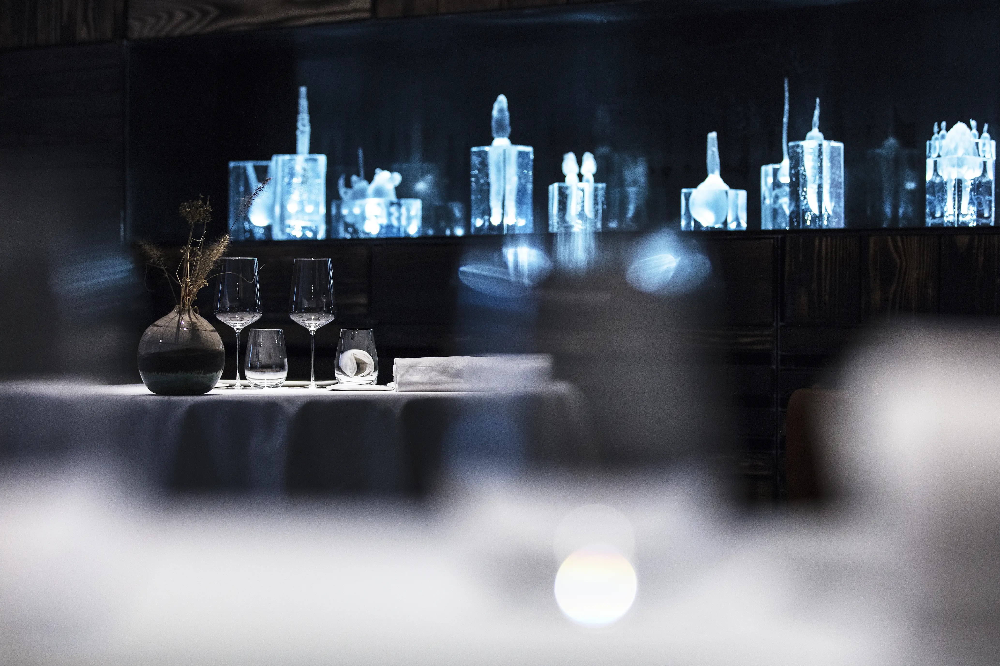
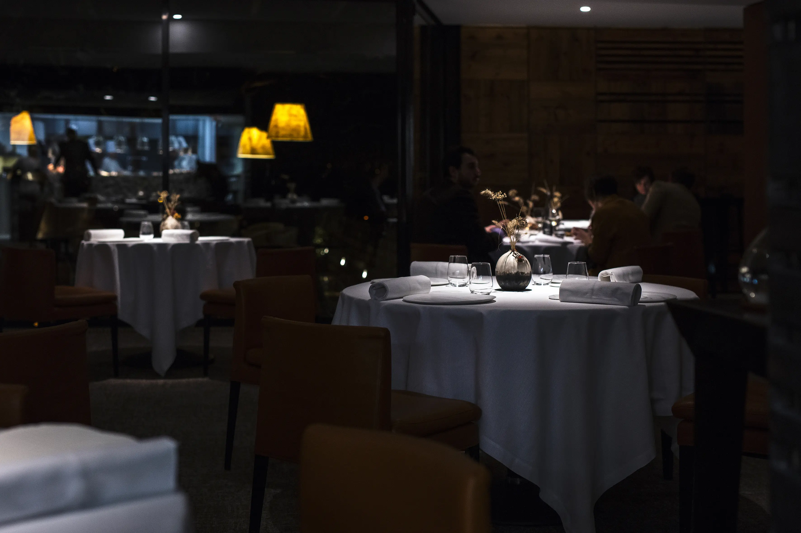
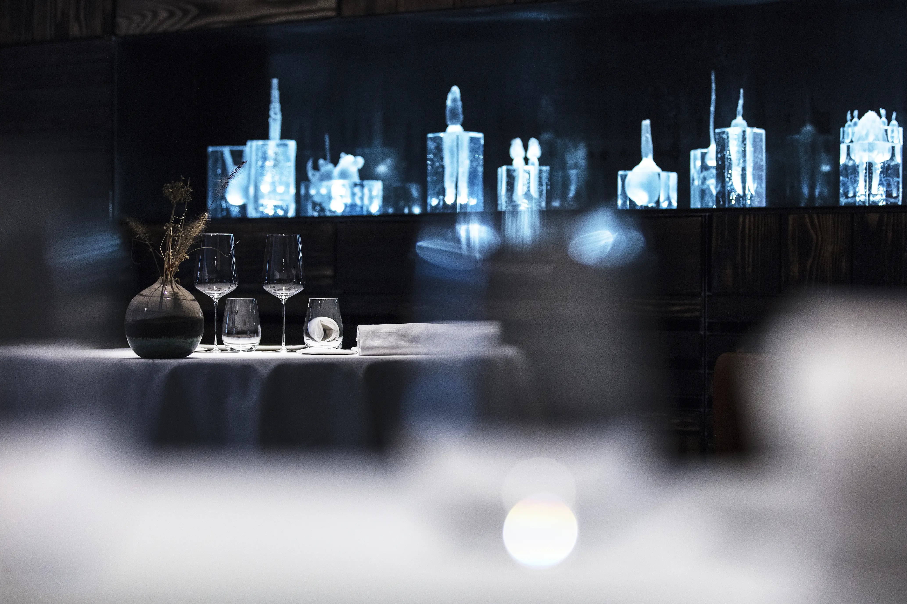
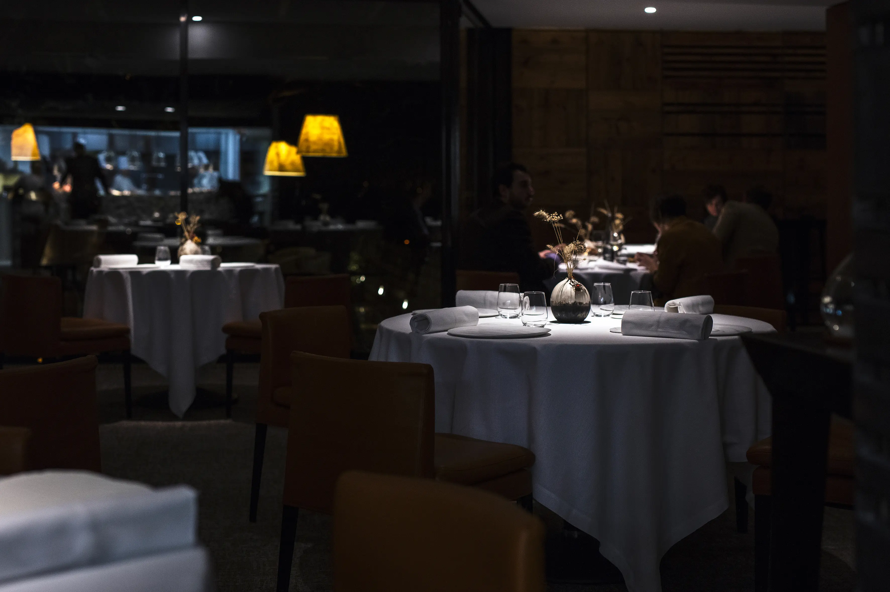
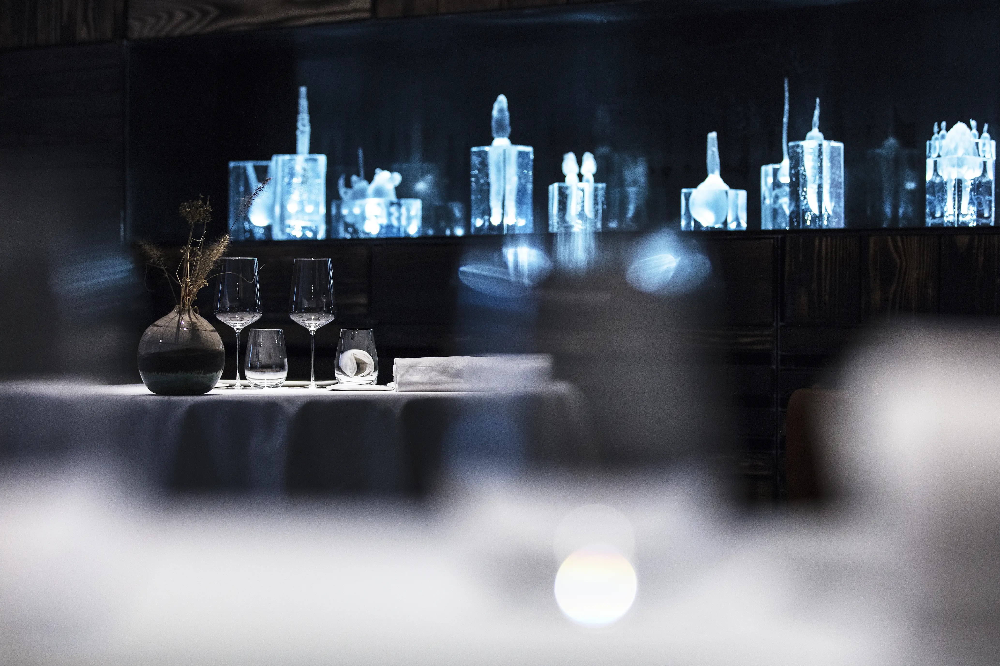
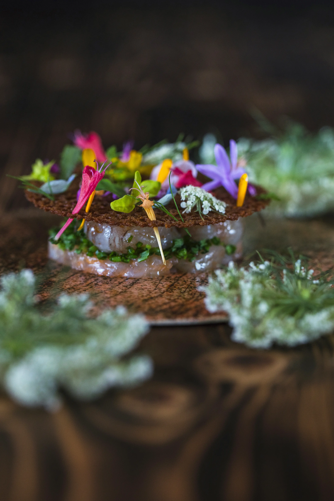
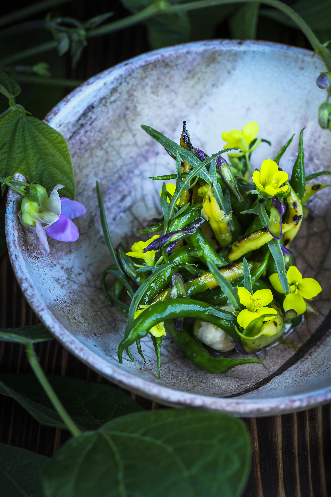
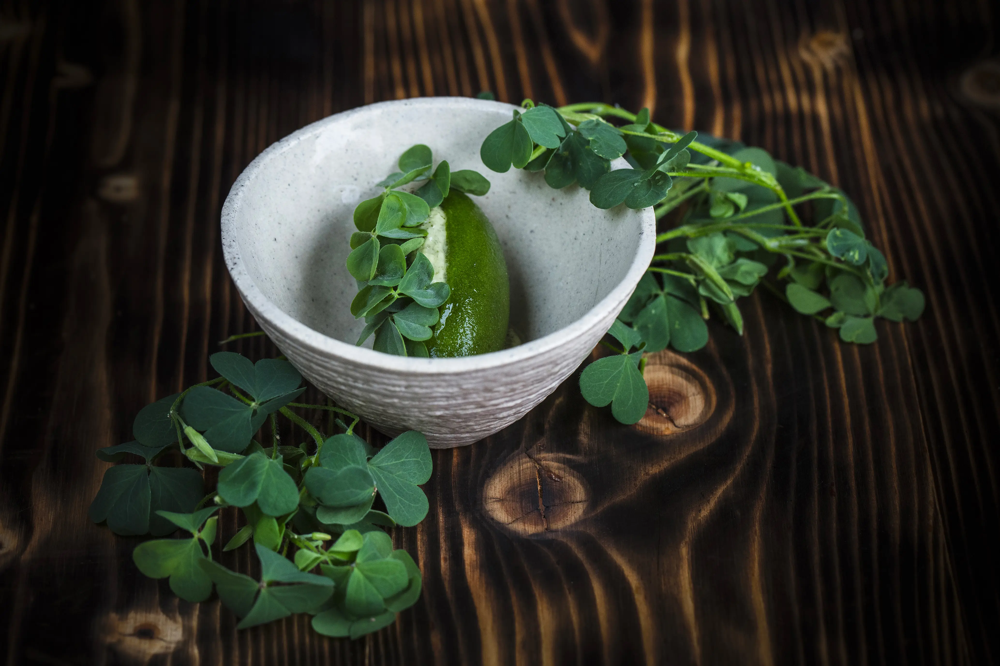

Le pavillon gourmand
RESTAURANT GASTRONOMIQUE VÉGÉTAL & LACUSTRE 3* MICHELIN ANNECY
UN LIEU
Univers singulier, identitaire et façonnée par l'Homme. Essences de bois brulé, pierre de savoir et cristal taillé, la salle, apaisante et épurée, accueille l'authentique transparence réconfort
 
  
   
UN MOMENT
Par le prisme culinaire, entre pudeur et force vitale, le monde du vivant s'exprime jusqu'à la quintesssence. Sublimé, il livre son émotion ultime
NOUS TROUVER
Un lieu unique dans un écrin de nature.